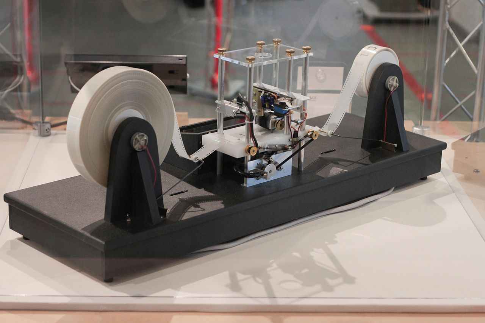

1 / 15
2 / 15
1936
LA MÁQUINA DE TURING
El inglés Alan Turing, considerado el padre de la ciencia computacional y célebre por haber descifrado el aparato de comunicaciones Enigma de la Alemania nazi, propuso en 1936 un sistema teórico que aplicaba una serie de reglas a una cinta codificada para ejecutar cualquier algoritmo, lo que equivalía a una máquina de computación general.3 / 15
1946
LA NEURONA ARTIFICIAL
En 1943 Walter Pitts y Warren McCulloch publicaban un influyente estudio en el que describían la neurona artificial, la primera formulación teórica de lo que después se llamaría red neuronal. Sobre este modelo matemático, en 1951 Marvin Minsky y Dean Edmonds diseñarían SNARC, la primera máquina basada en una red neuronal.4 / 15

1950
EL TEST DE TURING
En 1950 Turing publicaba su famoso artículo “Computing Machinery and Intelligence”, en el que definía el “juego de imitación” como una prueba para comprobar la capacidad de una máquina de hacer creer a su interlocutor humano que ella también lo es. El llamado test de Turing ha permanecido desde entonces como una medida de la capacidad de pensar de una IA.5 / 15
1955
EL PRIMER PROGRAMA DE IA
El honor del primer programa de IA corresponde a Logic Theorist, escrito en 1955 por Allen Newell, Herbert A. Simon y Cliff Shaw. Con su razonamiento automatizado, resolvió 38 de 52 teoremas de la obra Principia Mathematica de Russell y Whitehead. Simon atribuyó a su programa la facultad de dar una mente a una máquina, lo que luego se llamaría IA Fuerte o General. Logic Theorist se presentó en 1956 en el simposio fundacional de Dartmouth.6 / 15
1956
NACE LA INTELIGENCIA ARTIFICIAL
En el verano de 1956 se celebraba en el Dartmouth College de New Hampshire el Dartmouth Summer Research Project on Artificial Intelligence, un simposio organizado por John McCarthy, Marvin Minsky, Claude Shannon y Nathan Rochester que se considera el acto fundacional de la Inteligencia Artificial, un término propuesto para la ocasión por McCarthy.7 / 15

1964
ELIZA, EL PIONERO DE LOS CHATBOTS
Durante los años siguientes al simposio de Dartmouth fueron muchos los avances en programación de IA, mientras nacían laboratorios en instituciones como el Instituto Tecnológico de Massachusetts o la Universidad de Stanford. Newell, Simon y Shaw presentaban su General Problem Solver, y en 1964 Joseph Weizenbaum creaba ELIZA, un psicoterapeuta automatizado en lenguaje natural, precursor de los chatbots.8 / 15

1966
SHAKEY, EL PRIMER ROBOT CON IA
Entre los primeros intentos de construir robots inteligentes destacó Shakey, creado entre 1966 y 1972 en Stanford por Charles Rosen, Nils Nilsson, Peter Hart y otros. Fue el primer robot móvil capaz de percibir su entorno, tomar decisiones y comunicarse en lenguaje natural. Sus diseños inspiraron los vehículos autónomos, la robotización industrial o los rovers de Marte.9 / 15
1997
DEEP BLUE VENCE A GARRY KASPAROV
Los grandes avances posteriores a Dartmouth sembraron un entusiasmo que llevó a los científicos a predecir la creación de una IA general en unos pocos años. Pero estas previsiones no se cumplieron, y los recortes de fondos sumieron a esta disciplina en el llamado invierno de los años 70 y 80. El interés renació en los 90, sobre todo gracias a un golpe de efecto, cuando la máquina Deep Blue de IBM venció al campeón de ajedrez Garry Kasparov.10 / 15
2002
LA IA LLEGA AL HOGAR
La primera introducción de la IA en los hogares fue de un modo que pocos esperaban: a través de la limpieza del suelo. En 2002 la compañía iRobot lanzó Roomba, el primer robot doméstico autónomo capaz de navegar gracias a un conjunto de sensores y tomar decisiones. En 2010 Roomba ingresó en el Robot Hall of Fame de la Universidad Carnegie Mellon.11 / 15
2011
NACEN LOS ASISTENTES VIRTUALES
En 2011 Apple introdujo Siri, el primer asistente virtual con reconocimiento de voz e interacción con lenguaje natural en un smartphone. Google respondería en 2012 con Google Now, Microsoft con Cortana en 2014 y Amazon con Echo/Alexa el mismo año. Los asistentes virtuales se han convertido en la experiencia cotidiana de la IA para millones de usuarios, conectando a su vez con otra multitud de aplicaciones basadas en IA.12 / 15
2011
WATSON GANA UN CONCURSO
Un nuevo golpe de efecto publicitario llegó en 2011 cuando la IA Watson de IBM ganó a los campeones del concurso televisivo Jeopardy!, logrando el premio de un millón de dólares. Después de su éxito mediático, IBM destinó a Watson a otros usos, como la investigación médica o la predicción meteorológica.13 / 15
2015
ALPHAGO, CAMPEÓN DE GO
En 2015 el programa de redes neuronales AlphaGo de la compañía DeepMind de Google vencía al campeón Fan Hui en el juego oriental del Go por cinco victorias a cero. Al año siguiente ganaría al también campeón Lee Sedol. AlphaGo aprendía de los juegos humanos, pero la siguiente versión, AlphaGo Zero, fue construida desde cero para aprender solo jugando contra sí misma. Venció a su antecesora por cien a cero.14 / 15
2020
LA IA RESUELVE UN PROBLEMA CIENTÍFICO DE MEDIO SIGLO
En noviembre de 2020 la segunda versión del programa de aprendizaje automático AlphaFold de DeepMind, basado en la experiencia aprendida por esta compañía con AlphaGo Zero, conseguía resolver la estructura tridimensional de virtualmente cualquier proteína, un problema científico de enorme complejidad que llevaba medio siglo esperando resolución. Este logro ha sido calificado como el avance más importante en la historia de la IA.15 / 15
2022